Rundgang durch unser KLFA
Komm mit auf einen Rundgang um und in unser Kleinlöschfahrzeug: von vorne über die Geräteräume und das Heck bis in den Mannschaftsraum, ins Fahrerhaus und aufs Dach. Starte den Kameraflug oder wähle eine Station. Tippe auf die roten Punkte im Foto, dann erfährst du, was dort ist.
Entwurf – wird noch ergänzt.
1 von 17 Vorne
So sieht unser Kleinlöschfahrzeug von vorne aus. Tippe auf die Punkte!
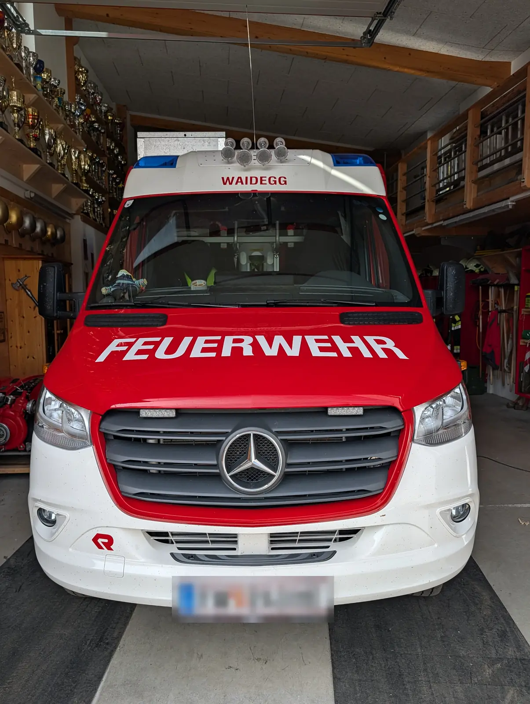
- Blaulicht – Das blaue Licht auf dem Dach leuchtet bei der Einsatzfahrt. Dann wissen alle: Bitte Platz machen!
- Scheinwerfer am Dach – Vier zusätzliche Lampen oben auf dem Dach.
- Schriftzug WAIDEGG – Hier steht, zu welcher Feuerwehr das Auto gehört: Waidegg.
- Schriftzug FEUERWEHR – Groß und gut lesbar auf der Motorhaube.
- Mercedes-Stern – Das Fahrzeug ist ein Mercedes Sprinter.
- Rosenbauer-Logo – Das rote „R“ steht für Rosenbauer. Diese Firma hat den Feuerwehr-Aufbau gebaut.
2 von 17 Fahrerhaus
Wir schauen durch die Windschutzscheibe ins Fahrerhaus. Hier sitzen der Fahrer und der Gruppenkommandant.
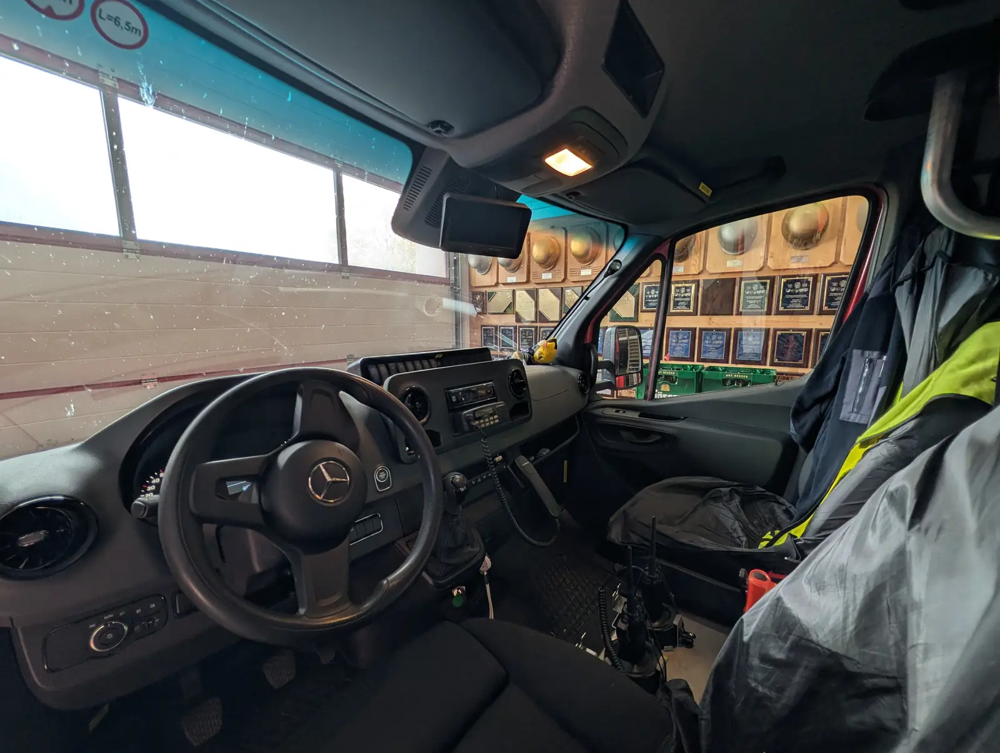
- Schild „L=6,5m“ – Das Schild zeigt: Das Fahrzeug ist 6,5 Meter lang.
- Lenkrad – Mit dem Mercedes-Stern in der Mitte.
- Funkgerät – Mit dem Funkgerät spricht die Mannschaft mit der Leitstelle und anderen Feuerwehren. Der Hörer hängt am Kabel.
- Handfunkgeräte – Zwei Funkgeräte zum Mitnehmen, in ihren Halterungen.
- Wird noch ergänzt – Der Bildschirm oben wird später beschrieben.
3 von 17 Fahrerseite
Jetzt die linke Seite: hier steigt der Fahrer ein.
- Blaulicht – Auch von der Seite gut zu sehen.
- Fahrertür mit Wappen – Auf der Tür steht „Freiwillige Feuerwehr Waidegg“, dazu das Wappen.
- Tür mit Aufschrift KLFA – KLFA heißt Kleinlöschfahrzeug mit Allrad. Allrad bedeutet: alle vier Räder werden angetrieben.
- Trittstufe – Über die Stufe kommt man leichter ins Fahrzeug.
- Rollladen zum Geräteraum – Hinter dem Rollladen ist ein Geräteraum. Im nächsten Bild ist er offen.
- Notruf 122 – 122 ist die Notrufnummer der Feuerwehr.
- Wird noch ergänzt – Diese Stelle wird später beschrieben.
4 von 17 Geräteraum offen
Rollladen auf! Hier ist ganz viel Ausrüstung verstaut. Im nächsten Bild geht es ganz nah heran.
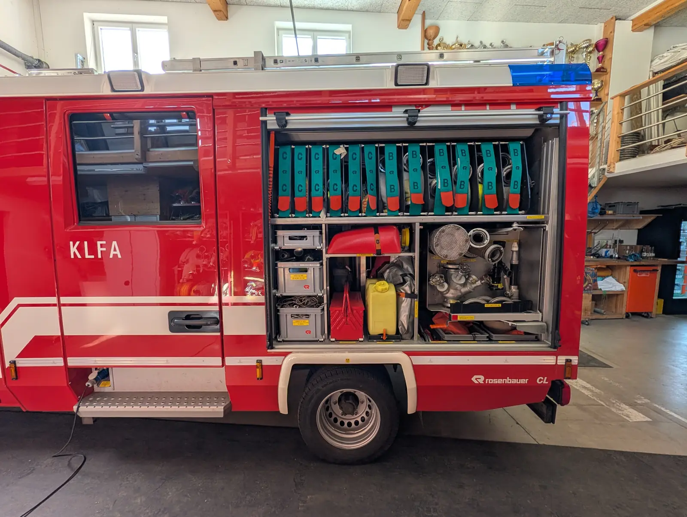
- Leiter am Dach – Oben auf dem Dach liegt eine Leiter.
- C-Schläuche – Die Gurte mit „C“ gehören zu den C-Schläuchen. Das sind die dünneren Schläuche.
- B-Schläuche – Die Gurte mit „B“ gehören zu den B-Schläuchen. Die sind dicker als C-Schläuche.
- Arbeitsleine / Mehrzweckleine – So steht es auf der Box.
- Rundschlinge / Schäkel – So steht es auf der Box.
- Schwimmsauger – Der rote Schwimmsauger. Sein Platz ist so beschriftet.
- Werkzeugtrage – Der rote Werkzeugkasten. Sein Fach ist mit „Werkzeugtrage“ beschriftet.
- Saugkorb – Das runde Gitter kommt vorne auf den Saugschlauch. So kommen keine Steine oder Blätter in die Pumpe.
- Wird noch ergänzt – Das untere Fach wird später beschrieben.
5 von 17 Geräteraum im Detail
Ganz nah dran: viele Plätze haben ein gelbes Namensschild.
- C-Schläuche – Gurte mit „C“.
- B-Schläuche – Gurte mit „B“.
- Schwimmsauger – Beschriftet mit „Schwimmsauger“.
- Werkzeugtrage – Beschriftet mit „Werkzeugtrage“.
- Gelber Kanister – Das Fach ist mit „Ölbindemittel“ beschriftet.
- Notfallwanne – Beschriftet mit „Notfallwanne“.
- Kugelhahn B – So steht es auf dem Schild darunter.
- Stützkrümmer B – Das rote, gebogene Teil. Das Schild darunter sagt „Stützkrümmer B“.
- Strahlrohr B – Aus dem Strahlrohr kommt vorne das Wasser heraus. Das Schild daneben sagt „Strahlrohr B“.
- Wird noch ergänzt – Diese Stelle wird später beschrieben.
6 von 17 Armaturen-Auszug
Dieses Fach kann man herausziehen. Hier sind die Armaturen.
- Saugkorb – Das runde Gitter mit den vielen Löchern. Es hält Steine und Blätter von der Pumpe fern.
- Verteiler – Mit den Handrädern öffnet und schließt man die einzelnen Abgänge. So kann das Wasser in mehrere Schläuche fließen.
- Kupplungsschlüssel – Damit werden die Schlauchkupplungen fest zusammengedreht. So steht es auf dem Schild.
- Drahtschutzkorb – Der Platz ist mit „Drahtschutzkorb“ beschriftet.
- B-Schläuche – Gurte mit „B“.
- Fach: Saugerleinen – So steht es auf dem Schild.
- Wird noch ergänzt – Diese Teile werden später beschrieben.
7 von 17 Heck zu
Das Heck: hinten ist auch ein Rollladen und eine Leiter.
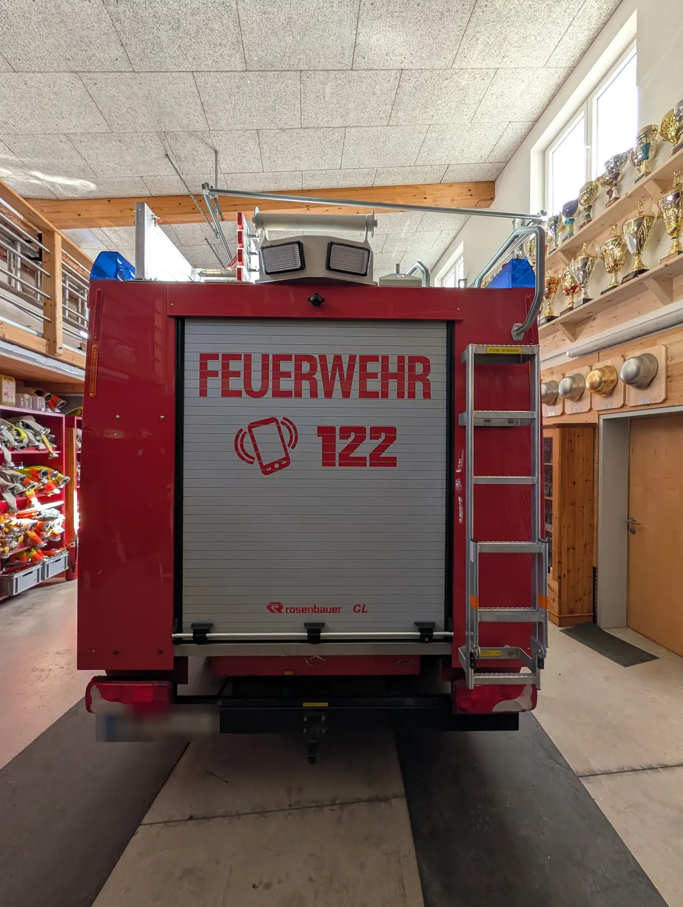
- Blaulicht – Auch hinten gibt es Blaulicht.
- Notruf 122 – Das Handy-Zeichen und 122: So erreichst du im Notfall die Feuerwehr.
- Rollladen hinten – Dahinter ist ein weiterer Geräteraum. Ein Foto davon fehlt noch.
- Rosenbauer-Logo – Der Aufbau ist von Rosenbauer.
- Leiter – Über die Leiter kommt man aufs Dach.
- Anhängerkupplung – Hier kann ein Anhänger angehängt werden.
- Zwei Leuchten – Zwei große Lampen oben am Heck. Im nächsten Bild sieht man sie aus der Nähe.
8 von 17 Heck offen
Jetzt ist der hintere Rollladen offen. Hier wohnt die Pumpe!
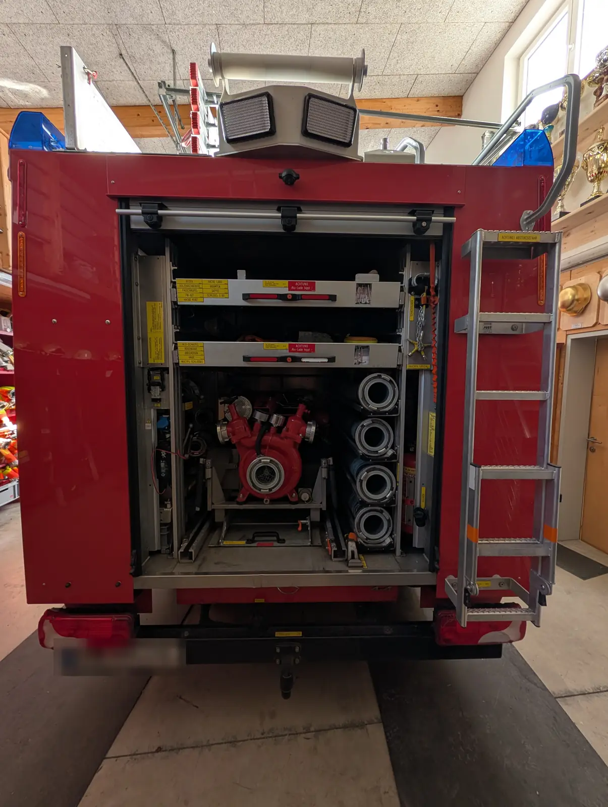
- Blaulicht – Auch hinten gibt es Blaulicht.
- Zwei Leuchten – Zwei große Lampen oben am Heck.
- Zwei Werkzeug-Laden – Auf den gelben Schildern steht, was drin ist, zum Beispiel Bolzenschneider, Krampen, FW-Axt, Alu-Schaufel und Bogensäge. In den nächsten zwei Bildern sind die Laden herausgezogen.
- Schachthaken und Rauchfangtürschlüssel – So steht es auf den Schildern daneben.
- Tragkraftspritze – Eine tragbare Pumpe. Sie saugt Wasser zum Beispiel aus einem Bach an und drückt es in die Schläuche.
- Saugschläuche – Die vier Saugschläuche. Durch sie saugt die Pumpe das Wasser an.
- Leiter – Oben auf der Leiter steht „Achtung! Absturzgefahr“.
- Wird noch ergänzt – Was hier links im Fach ist, wird später beschrieben.
9 von 17 Heckauszug: untere Lade
Die untere Lade ist herausgezogen. Darin liegen Werkzeuge.
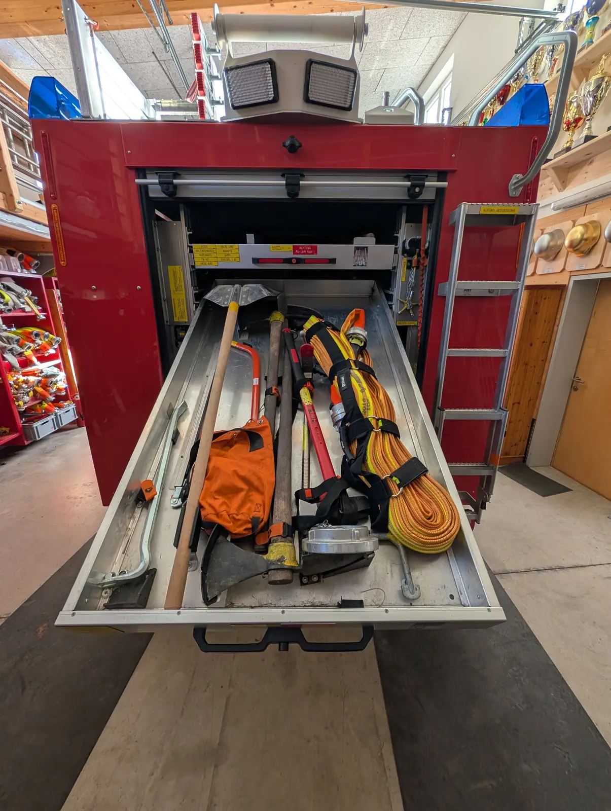
- Beschriftete Lade – Auf der oberen Lade steht, was hineingehört. Und ein rotes Schild warnt: „Achtung, Alu-Lade kippt!“
- Schaufel – Eine Schaufel mit langem Stiel.
- Bogensäge – Die rote Säge mit dem Bogen.
- Schlauch mit Gurten – Ein aufgerollter Schlauch, mit schwarzen Gurten zusammengehalten.
- Wird noch ergänzt – Die orange Tasche wird später beschrieben.
- Wird noch ergänzt – Die weiteren Werkzeuge werden später beschrieben.
10 von 17 Heckauszug: obere Lade
Und jetzt die obere Lade: viele Werkzeuge mit langen Stielen.
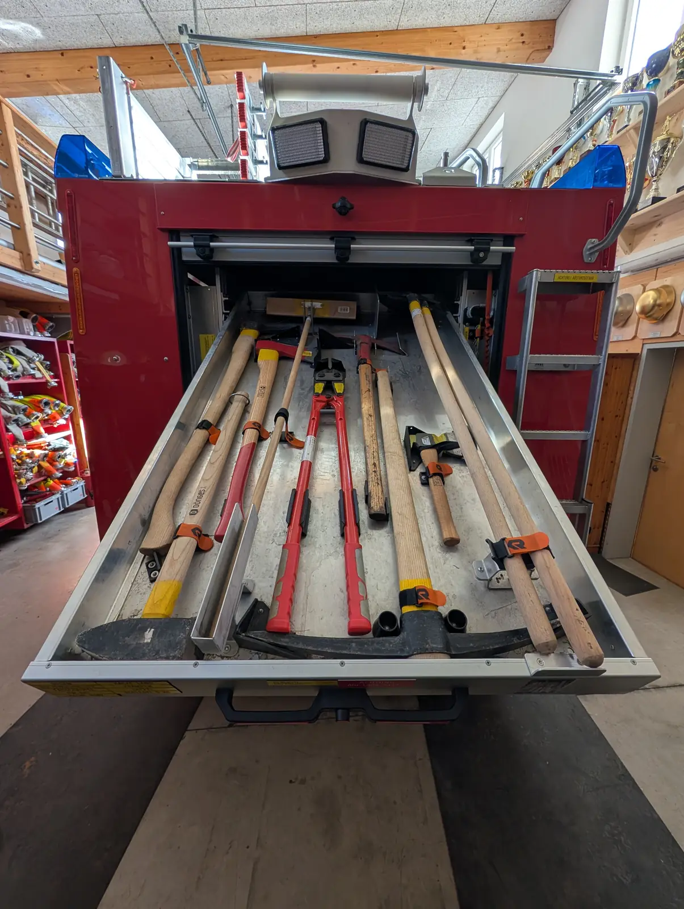
- Besen – Oben liegt ein Besen.
- Axt – Die Axt mit dem roten Stiel.
- Kleine Hacke – Eine kurze Hacke mit kleinem Stiel.
- Bolzenschneider – Die große rote Zange. Damit kann man zum Beispiel ein Vorhängeschloss aufschneiden.
- Krampen – Unten liegt ein Krampen, eine große Spitzhacke.
- Wird noch ergänzt – Die langen Stiele rechts werden später beschrieben.
11 von 17 Beifahrerseite
Wir gehen auf die rechte Seite, die Beifahrerseite.
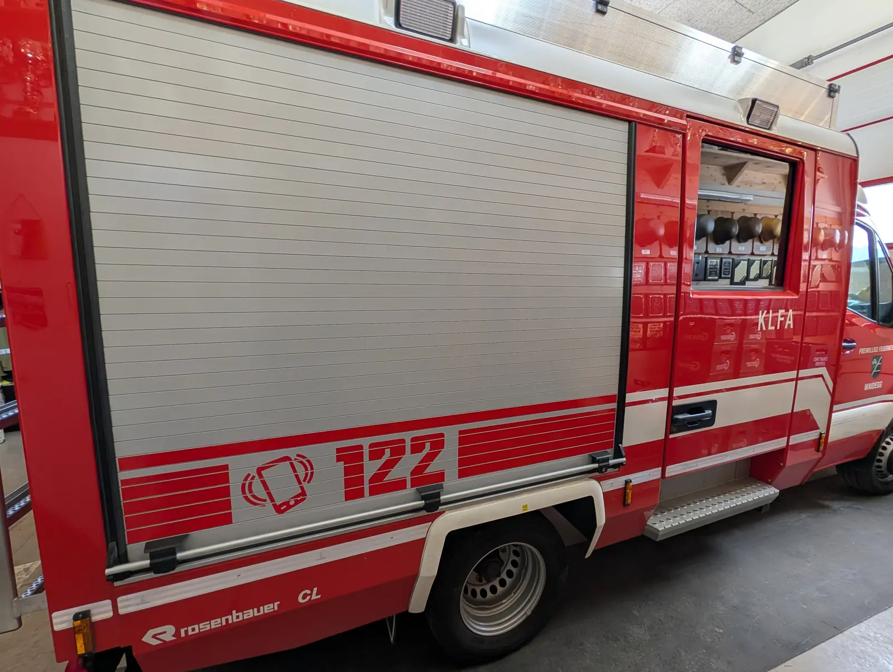
- Rollladen zum Geräteraum – Auch auf dieser Seite gibt es einen Geräteraum. Im nächsten Bild ist er offen.
- Notruf 122 – Die Notrufnummer der Feuerwehr.
- Tür mit Aufschrift KLFA – Hier geht es in den Mannschaftsraum.
- Trittstufe – Zum leichteren Einsteigen.
- Rosenbauer-Logo – Der Aufbau ist von Rosenbauer.
- Wird noch ergänzt – Diese Stelle wird später beschrieben.
12 von 17 Geräteraum rechts
Rollladen auf! Auf dieser Seite gibt es Strom und Licht.
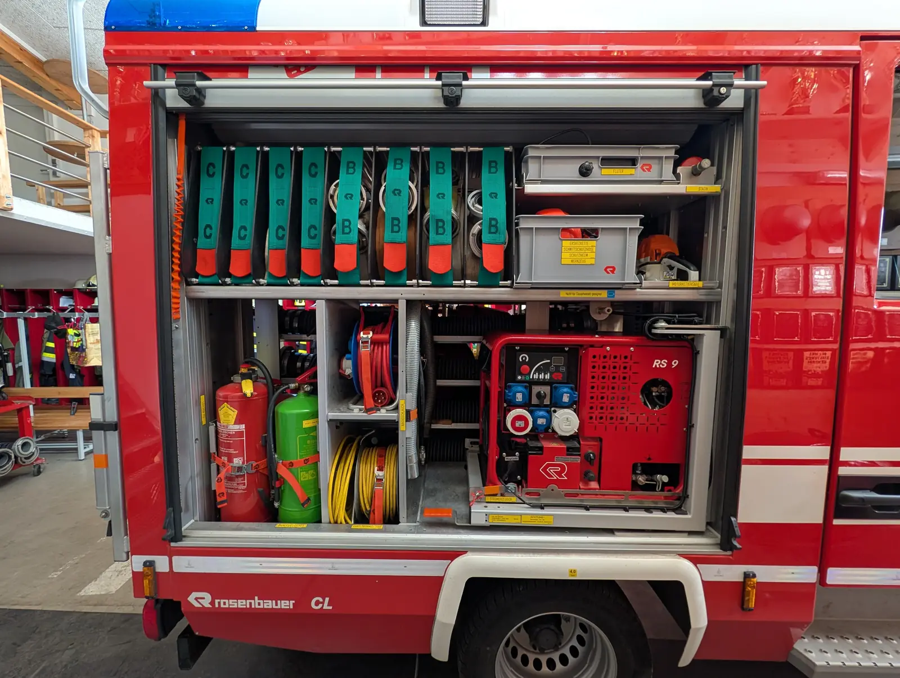
- C-Schläuche – Gurte mit „C“.
- B-Schläuche – Gurte mit „B“.
- Box „Fluter“ – In der Box ist ein Fluter, also ein heller Scheinwerfer. So steht es auf dem Schild.
- Stativ – Der Platz ist mit „Stativ“ beschriftet.
- Box mit Ersatzkette, Schnittschutzhose, Schutzhelm, Werkzeug – So steht es auf der Box. Das gehört zur Motorkettensäge.
- Motorkettensäge – Die orange Säge. Ihr Platz ist mit „Motorkettensäge“ beschriftet.
- Feuerlöscher – Zwei Feuerlöscher, ein roter und ein grüner.
- Kabeltrommel – Eine rote Kabeltrommel.
- Kabeltrommel 230 V – Die gelbe Kabeltrommel. So steht es auf dem Schild.
- Abgasschlauch – Der silberne Schlauch. So steht es auf dem Schild.
- Stromerzeuger RS 9 – Er macht Strom, zum Beispiel für Licht und Geräte. „RS 9“ steht drauf.
13 von 17 Stromerzeuger ausgezogen
Der Stromerzeuger kann herausgezogen werden.
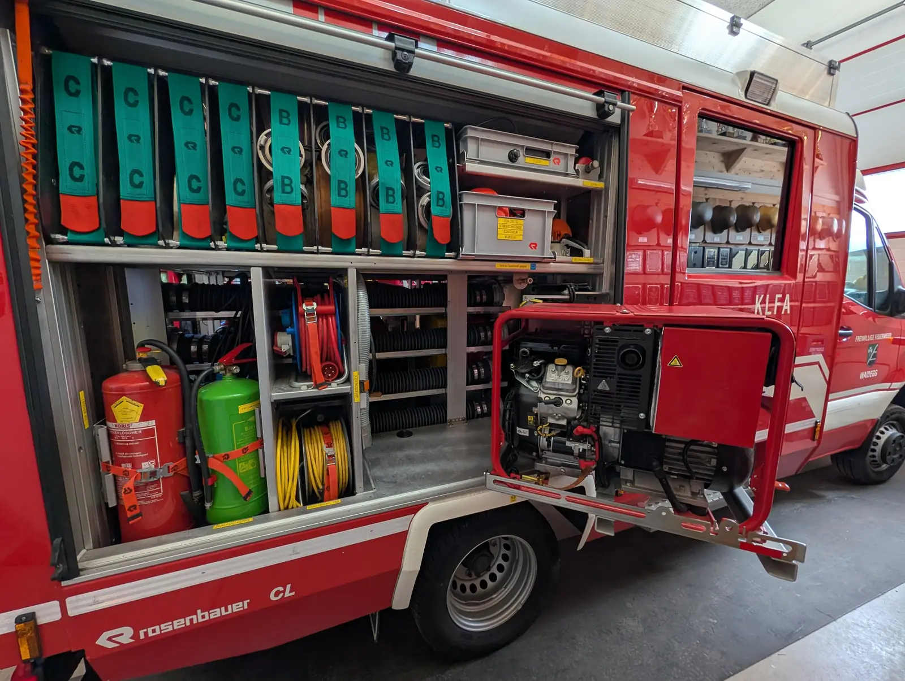
- C-Schläuche – Gurte mit „C“.
- B-Schläuche – Gurte mit „B“.
- Feuerlöscher – Die zwei Feuerlöscher.
- Kabeltrommeln – Die Kabeltrommeln.
- Stromerzeuger RS 9, ausgezogen – Der Stromerzeuger steht auf einem Auszug. Hier ist er herausgezogen.
14 von 17 Mannschaftsraum
Hier sitzt die Mannschaft auf dem Weg zum Einsatz.
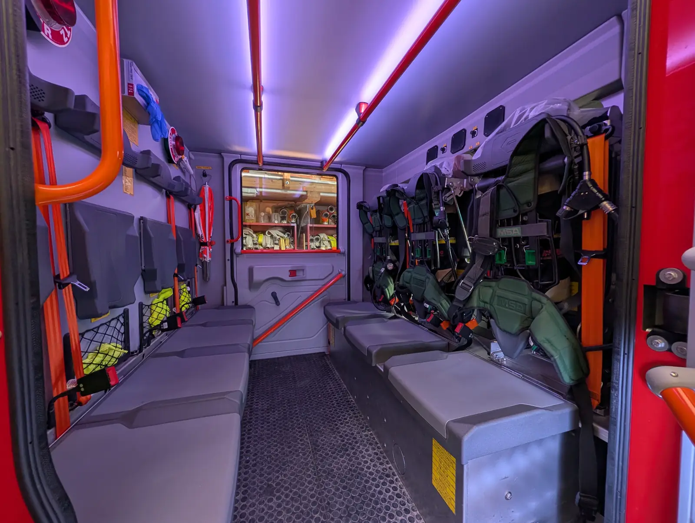
- Atemschutzgeräte – Die Geräte mit der Aufschrift MSA sind Atemschutzgeräte. Damit bekommen Feuerwehrleute im Rauch frische Luft.
- Sitzbank – Hier sitzt die Mannschaft.
- Haltegriff – Zum Festhalten beim Ein- und Aussteigen.
- Kelle „Halt Feuerwehr“ – Auf der rot-weißen Kelle steht „Halt Feuerwehr“.
- Einweghandschuhe – Eine Box mit blauen Handschuhen.
- Beschriftete Sitzkiste – Unter dem Sitz ist eine Kiste. Auf dem Schild steht zum Beispiel Atemschutzmaske, Fluchthaube, FW-Helm, Radkeil und Schneekette.
- Wird noch ergänzt – Was in den Netzen ist, wird später beschrieben.
15 von 17 Sitzkiste mit Handschuhen
Unter den Sitzen sind Kisten. Diese ist voller Handschuhe.
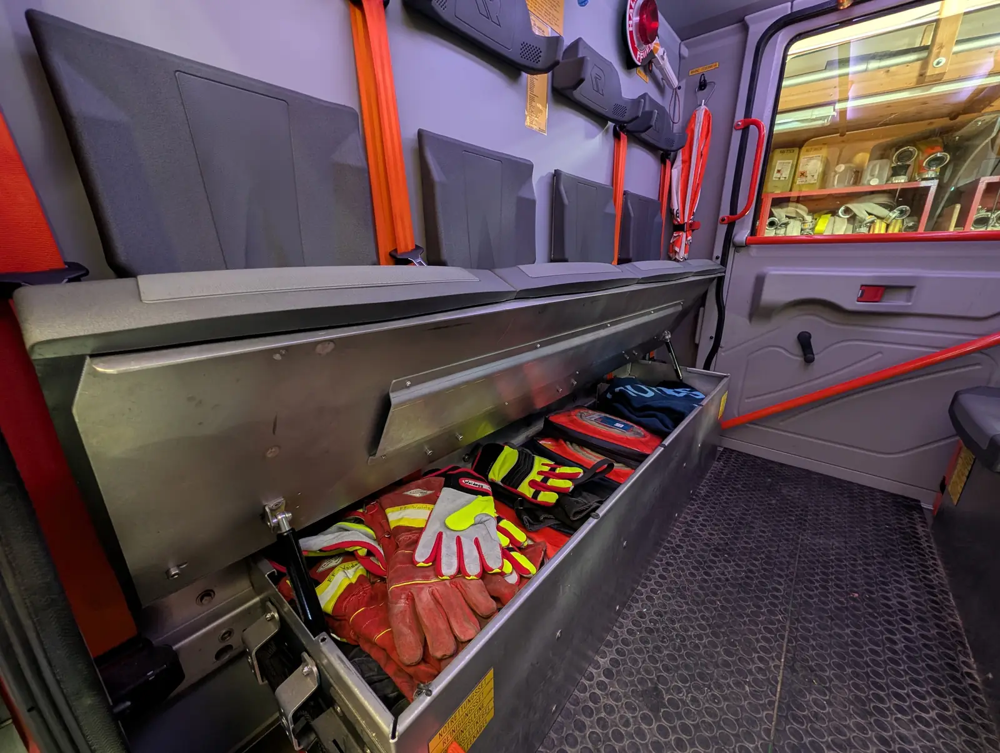
- Rückenlehnen – Die Rückenlehnen der Sitze.
- Handschuhe – Viele Arbeitshandschuhe.
- Schild an der Kiste – Teilweise lesbar: Notrettungsset, Reinigungsset, Rettungsleine und weitere Dinge.
- Wird noch ergänzt – Was hier hinten liegt, wird später beschrieben.
16 von 17 Sitzkiste mit Helmen
Noch eine Sitzkiste: hier liegen Helme.
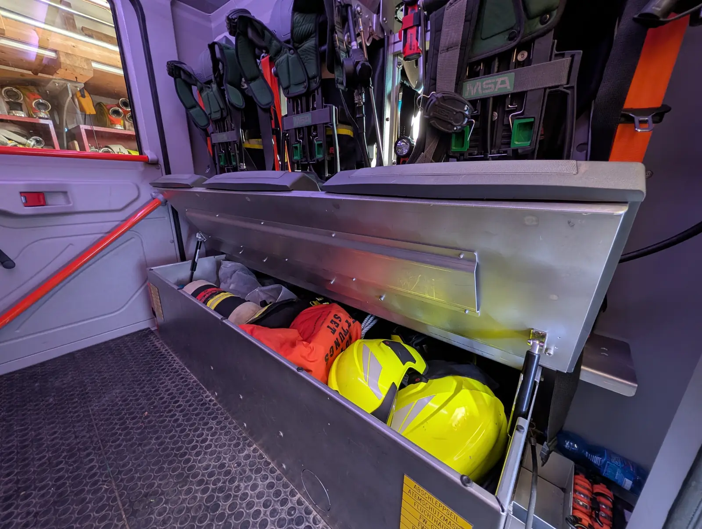
- Atemschutzgeräte – Darüber hängen die Atemschutzgeräte von MSA.
- Helme – Gelbe Feuerwehrhelme.
- Rettungsset – Auf der orangen Tasche steht „Rettungsset“.
- Seil – Ein Stahlseil. Auf dem Schild der Kiste steht unter anderem „Abschleppseil“.
- Schild an der Kiste – Teilweise lesbar: Abschleppseil, Atemschutzmaske, Fluchthaube und weitere Dinge.
- Wird noch ergänzt – Was hier links liegt, wird später beschrieben.
17 von 17 Dach
Zum Schluss von ganz oben: das Dach.
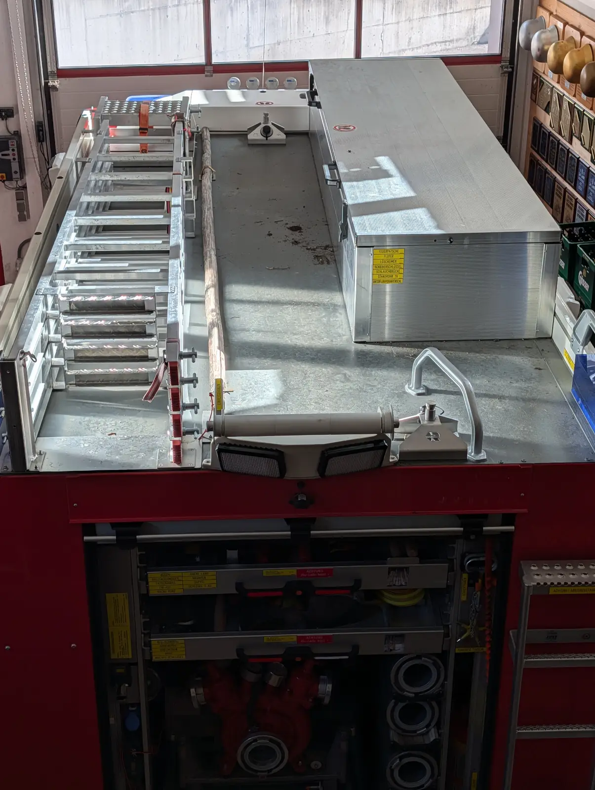
- Scheinwerfer vorne – Die vier Scheinwerfer vorne am Dach, die man im ersten Bild sieht.
- Leiter – Die Leiter liegt oben auf dem Dach.
- Dachkasten – Auf dem Schild steht, was drin ist: Feuerpatsche, Fluter, Löscheimer, Schieberschlüssel, Schlauchbrücke, Standrohr 2B und Unterflurhydrantenschlüssel.
- Zwei Leuchten – Die zwei Leuchten hinten, von oben gesehen.
- Wird noch ergänzt – Der lange Holzstiel wird später beschrieben.